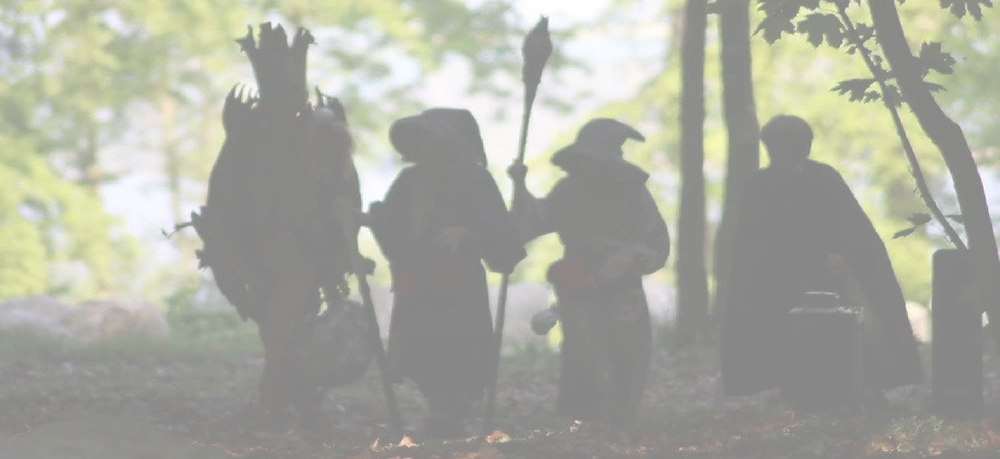
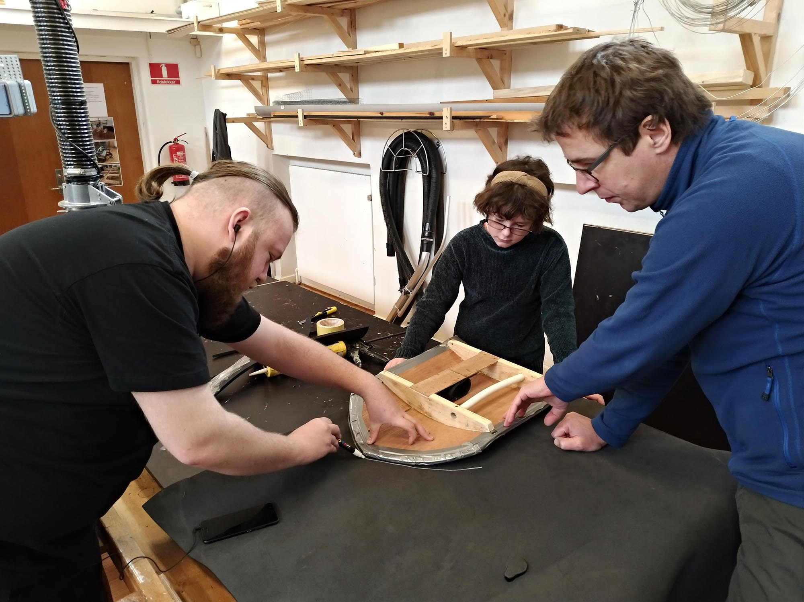
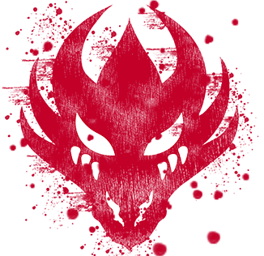

Welcome to Fafner Roleplay
The purpose of the association is to run "Fafner" for children and young people in order to give them the
opportunity to practice role-playing games, live role-playing games and related activities. This should give
the children an exciting, varied hobby.

Fight Club
We train combat with the soft role-playing weapons that everyone knows, but also a number of other forms of
combat. It can be anything from stunt fight, over kendo and bartitsu to steel guns and wooden shields.
LARP
A large part of Fafner's activities is about live role-playing. We have our regular campaign, the
Neibelungen and a few annual one-day or one-of-a-kind scenarios. We often participate in Stjær role-playing
events and also tend to participate in the youth and leisure clubs' Big Role-playing Day in Skanderborg.
Tabletop Games
In Fafner Roleplaying, we hold introductory workshops in table roleplaying and we have a few different
groups running. We encourage our members to form groups that can meet once in a while and we are happy to
make rooms, coffee, dice and game books available for game groups.

Workshops
We hold many different workshops during the year under the auspices of Fafner. Some of these workshops are
targeted at specific role-playing games, for example Sunfall or Quarantine Europe others are more general
and can be about learning to work with leather, building weapons or costumes or modifying your favorite
nerve from ugly plastic toys to the ultimate Flash Gordon jet gun.

Help Us!
If you have some time left over, your local role-playing association will gladly accept a couple of hours or a day's work once in a while. And it does not have to be to participate in games you can for example:
- Attend our working days
- Bake cakes / muffins / sausage horns etc. for when we meet
- Help clean up after live role-playing
- Help keep order at HQ
- Help with practical work on workshop days
- Arrange board games / table role play days
Write a flux to the chairman: Johan@kirstinelund.dk
Fafner Fight Club
All Mondays from 5pm to 6pm
Fafner Fight Club is our combat training. We meet once a week, specifically Mondays from 5pm to 6pm, and fight.
We train combat with the soft role-playing weapons that everyone knows, but also a number of other forms of
combat. It can be anything from stunt fight, over kendo and bartitsu to steel guns and wooden shields.
Of course we take care of each other and wear appropriate protective equipment.
The fight club is open to all members of Fafner role-playing games. Bring training clothes, a water bottle and
preferably also some gloves of some kind (the fingers are always exposed and it hurts much less to get a rap
over the teddy bears if you have gloves on) If you have your own weapons with you, it's fine, otherwise borrow
one just of us.
A crucial part of role-playing is collaboration. In Fafner we want cultivate cooperation and team-player
mindset. It helps young people develop socially as well as individually. By learning how to cooperate one
acquires problem-solving skills, learns how to resolve conflicts and stand for one's values and opinions.
Well met!
Martial arts are an excellent way to gain body experience. Coordination, balance, agility and strength are
developed through combat training.
Further intensify the struggle experience of joy, excitement, thrill, pride, self-control, body awareness and
self-belief.
You stand face to face to find out who is the strongest, has the best balance or reacts the fastest. With that
understanding, you create the basis for the fights not to become too serious. It should be fun and exciting to
fight with each other and both parties meet with respect.
Today's studies show that it is possible to reduce children's and teenagers' aggression and negative behavior
through martial arts. This type of physical activity helps them release their natural energy and have a lot of
fun at the same time. Martian arts also play a very important role of a self-discipline development of a person
and teaches about controlling one's emotions.
And remember: In Fafner, children win over adults! -Almost every time :-)
LARP
Live-Action Roleplay
A large part of Fafner's activities is about live role-playing. We have our regular campaign, the Neibelungen
and a few annual one-day or one-of-a-kind scenarios. We often participate in Stjær role-playing events and also
tend to participate in the youth and leisure clubs' Big Role-playing Day in Skanderborg. In addition, we run a
team of "the big ones" to Sunfall and we have a dream of participating together in one of the big European
role-playing games such as Mythodea in Germany.
We want a mix of our own live role-playing games and getting out and participating in others. Both to learn
something new and because live role-playing games are simply fun when there are many involved.
A crucial part of role-playing is collaboration. In Fafner we want cultivate cooperation and team-player
mindset. It helps young people develop socially as well as individually. By learning how to cooperate one
acquires problem-solving skills, learns how to resolve conflicts and stand for one's values and opinions.
We also do workshops and workshops where we repair the equipment and build new ones. It can be anything from
suits, to leather armor, masks, weapons, car tires, shields or whatever we just need for the next game. (there
was even once someone who sat and sewed a belt holder for a fine porcelain teacup with saucer intended to be
able to pull like a cowboy in a shooting duel. (it was something with some steampunk cosplay)
We also make sure to keep the fighting form at bay until medieval role-playing games. For that purpose we have
Fafner Fight Club (and yes you can talk about it) where we train all kinds of combat and stunts.
None of us are definite experts, but we learn from each other and have fun and get some exercise in the
meantime. We fight mostly with the soft role-playing weapons, but we also have both steel and wooden weapons at
our disposal.
Do you want to play? Of course!
Playing is important for children, young people and adults alike. In the game, we experiment, get creative and
experience the possibilities of the world. In short: the game helps to develop everything we want to develop:
Robustness, creativity, innovation, curiosity and social skills.
Imagination is a cornerstone of any role-playing game. Unfortunately, we can not do real magic, but at the
playing arena we all agree that when "Black Eye" is shouted, everyone who hears the shout goes blind for 30
seconds. They roam around and shout and scream in anxiety and many panic around with weapons. Meanwhile, the
Necromancer lists just as quietly. Imagination maximizes the brain's resources and ability to process,
transform, and transcend - imagination is to create something new.
When a child, for example, meets an evil, super scary and combative orc and then presents himself as a noble,
brave and cunning Black Queen, the child will as silently as possible try to sneak into the adult and loudly
perform his declaration of war served with a storm of well-aimed swords and the magic of "black eyes".
Of course, the child knows well that it is not really a Black Queen and that the other is not a chore, but the
imagination in the game allows the child to test a number of hypotheses for what would happen if it really was a
queen who stood face to face with his malevolent arch-rival
After the game, they can meet and have a fun game together. An experience that they will hopefully develop and
play with again.
Tabletop Games
D&D, Shadowrun, Call of Chtuhlu, Dragons and Demons, World of Darkness, Viking, and so on and so forth. The list
of role-playing games is long and behind each title hides new worlds and new experiences.
For those who are not exactly into it, table role-playing games are a form of board games - just without boards.
This is done by creating a character (= a character) who then has to interact into a story that is told by a
game leader. It can be anything from being a proud knight who has to go out and save beautiful princesses from
dragons (or save dragons from terrible princes, if that is), that you are a private detective in the 1920s USA
and have to solve occult mysteries, or that one is a member of a vampire clan in 1980s Paris and must fight his
way to the pinnacle of power within the clan.
It may be the character survives the hardships and wins honors, money and prestige, but it is equally possible
that he exhales under the dragon's claws and must start again with a new character
Here it is only the imagination that sets the limits - and life and death are decided by a roll of the dice.
In Fafner Roleplaying, we hold introductory workshops in table roleplaying and we have a few different groups
running. We encourage our members to form groups that can meet once in a while and we are happy to make rooms,
coffee, dice and game books available for game groups.
We think it's a really good way to develop imagination, community and empathy.
It is something you may need in many places in life - not just for role-playing games.
Fafner Games
- Risk
- Arkham Horror
- king of Tokyo
- Cards Aginst Humannity
- Sons of Anarchy
- Pandemic
- Munchkin
- Bang
- Family Business
- 13 Days
- Blood Bowl
- Gloom
- Call of Cthulhu
- Battlestar Galactica
- How to host a murder
- Class Struggle
- 1809
- BattleTech
- Plastimois
And much more!
Workshops
We hold many different workshops during the year under the auspices of Fafner. Some of these workshops are
targeted at specific role-playing games, for example Sunfall or Quarantine Europe others are more general and
can be about learning to work with leather, building weapons or costumes or modifying your favorite nerve from
ugly plastic toys to the ultimate Flash Gordon jet gun.
We have been doing workshops for many years and have become quite good at making our own gear, so we can offer
our members good teaching and guidance and we have everything for the subject belonging to materials and tools.
For our workshops for children members, you must have an adult with you. This means that you can really achieve
something on such a workshop day and then it is always nice to do something together. There is a small own
payment on the expensive materials such as core leather etc. This means that you come home with a pair of arm
protectors for approx. a 50s or a finished shield for a 20s

Niebelungen
It has been a confusing and stormy time for the small kingdom of Niebelungen. But now the peace seems to have
subsided. At least for a while. The dragon Fafner was greatly weakened displaced and probably licks his wounds
far from the borders of Niebelungen and Death and his army is again locked inside the darkest cave.
After the battle against Death and the Dragon Fafner, the ancient gods are loved like never before, and
therefore return strengthened. But peace, as you know, is only a brief build-up between two wars.
New dangers threaten, rumor has it that the King of Thieves has returned and there are rumors that a new war is
brewing.
A ghost walks through the Kingdom of Niebelungen, the Ghost of the King of Thieves. In every marketplace, this
mysterious figure is whispered about. The thief king has long been a legend in Niebelungen, something suspicious
people used to scare their children with. "If you stick your father to the city guard, the twenty king will come
and take you !!" or as a kind of bohemian one could blame if a servant lost his master's money "No gentlemen, I
have not been to Kro, it must be the King of Thieves who is behind" But lately the fear has become more and more
tangible. Robber gangs now speak openly about the mysterious Thief King to whom they pay taxes, but also feel
protected by. And burglary, robberies and assaults have become part of the order of the day both in the 4
cities, in the forest and on the roads. In short, Niebelungen now lives in fear of the Thief King.
In the cities themselves, things are not going too well, because the nobility is fighting. Baron von Rothenburg
returns home from a expedition in anticipation of honor and glory. Instead, he discovers that his possessions
lie in ruins, the worst of what has happened in his absence is that the deed at Ligthenheim has been sold. The
sale has taken place in more or less shady forms, and has something to do with the baron's trusted bodyguard
Schöntz.
The new owner is Goblinen Kromutter, who cannot quite explain the change of ownership in a convincing way and
has therefore fallen into disfavor among the nobility. Kromutter, however, tends to have a faithful flock of
nomads and lost soldiers as his bodyguard, the problem with them is that they usually fall for rum and gold and
let themselves be bought over to another gentlemen. Chrome nut, however, is never completely lost, she knows
magic and many are afraid of her power.
Welcome to Niebelungen no. XXV.
s
Kongeriget Niebelungen
A continued role-playing campaign
Nibelungen is a small and legendary kingdom, which nowadays is only connected to the human world via a portal,
which at certain intervals manifests itself in the town Bjedstrup which is located between Skanderborg and Ry in
Denmark.
Niebelungen is trapped in a time pocket, which in human time matches the period between the German-Roman
emperor Charlemagne (also known as Charlemagne - died 814) and Emperor Charles the 5th (died 1556).
It is in the period when the original genera of the Old World slowly but surely retreat from the visible,
human-dominated world and disappear into the mists of legend.
Charles the 5th is thus the last human emperor who has seen and spoken with an elven prince and with a dwarf
king. This happened when the elven prince Wolfric and the dwarf king Albrecht participated in Charles'
coronation as German-Roman emperor in the year 1530 - ie. in the time just before the Reformation ran through
Europe and forever changed by the old and well-established customs and finally tore the bond between the human
world and the old world. Since then, the original genera of the Old World have not been seen or heard in the
human world.
Only through the Nibelungen is it still possible to meet the ancient original genera:
- The ambitious and diverse - people
- The skilled blacksmiths and fearless warriors - the dwarves
- The proud and beautiful rivers
- The grim and raw goblins and orcs
- The friendly and cheerful, but also cunning and cunning hobbits
The Nibelungen is thus a kingdom that does not follow the reckoning of time that is valid in our world. Being
trapped in a time pocket therefore means that in Niebelungen you see costumes, weapons, art and customs that
span from the Viking Age's heyday to the High Middle Ages just before the Reformation. Here you have the
opportunity to live out your dreams of fighting deadly knights, practicing magic, helping to rule a kingdom or
blackmailing thugs and undermining the rule of others of a kingdom.
One can also build a trading empire, brew and sell potions and other miracle cures, practice a craft as a
blacksmith or baker, and earn a fortune. Only your imagination sets the limits.
Niebelungen
History and Geography
In the early days, Niebelungen was a united kingdom under the mighty King Charles the Bald - a warrior king by
the grace of the gods, who united the kingdom and ensured peace in the land for as long as he lived. He ruled
with an iron fist in the velvet glove and was also a master at keeping the various factions and genera in check
and playing them off against each other if it drew up to disagreements.
To further strengthen the unity, Charles adopted a young man from each of the ruling families: an elven prince,
a son of an orc prince, and a human child, raising them as his own sons.
But when Karl died, the unity was over. Karl's adopted sons individually demanded to be recognized as the new
king of the entire Niebelungen - but as neither of them could muster an army large enough to seriously overcome
both of the other two factions - the Nibelungen ended up being divided into three city-states, which have since
been embroiled in strife
Niebelungen
Consistent character & Game Marshals
Niebelungen
Consistent character & Game Marshals
Practical information
Fafner membership fee
0-17 years: 125, - pr. half year
18-25, - 200 pr. half year
25 +, - 250 pr. half year
Online registration and payment : Member system
Or MobilePay : 444949 (Write the full name of the person you are paying for in the comment on the payment.)
Nibelungen -Fafner's egen
rollespilskampagne
Hvor og hvornår
Den anden søndag om måneden (ikke i juli og december).
Tidspunkt
Vi starter indtjek kl. 11:00 og slutter dette ca. kl. 11.30. Herefter vi afholde en kort briefing, derefter vil
rollespillet begynde. Rollespillet slutter igen kl. 15:00, hvor vil vil holde en debriefing. Efter debriefingen
afholdes de afsluttende kampe, hvor vi alle få lov at slås en gang til for at slutte dagen ordenligt af, indtil
k. 16.00.
Mad og drikke
Vi sørger for mad og drikke inde i spillet, man kan købe det gennem kroen for arbejde el. spilpenge. Det kan for
nogle, være et godt supplement at have en extra snackmadpakke og en drikkedunk med.
Lån af udstyr
Du kan låne et sværd og rollespilstøj af os, hvis du ikke har våben eller udstyr selv. De vil blive udleveret
ved indtjek og koster ikke noget at låne.
Pris
Det koster en rund 20'er at deltage i rollespilskampagnen for foreningens medlemmer. For ikke medlemmer 80,-
Kontant eller MobilPay: 444949 (husk navn på den person man betaler for i kommentaren til betalingen)
Newsletter
Kære Venner
Vi er så klar efter alt for lang tid uden rollespil. Vi har igen live events plus Fafner Fight Club på menuen.
Det bliver lidt anderledes end vi er vant til pga. ..ja, I ved.
Søndag den 9. maj og den 13. juni genoptager vi vores eget klassisk fantasy univers kaldet ”Niebelungen” hvor
man kan opleve sære væsner, sjove opgaver, mærkelige skrifter og drabelige slag. Her kan alle være med, det
anbefales dog at børn under 2. klasse kommer ifølge med voksne, da der sandsynligvis er uhyrer i skoven!
Niebelungen finder sted hver den anden søndag i måneden og ud over her på hjemmesiden kan man også læse
historien, følge med i udviklingen, få spor og trailere osv. på Fafners facebook gruppeside
Niebelungen spillene koster penge at deltage i , 80 kr for ikke medlemmer og 20 kr for medlemmer, selvom der
står gratis på facebook begivenheden.
Mandag den 12. april genstarter Fafner Fight Club som vores kamptræning. Vi mødes en gang om ugen, nærmere
bestemt mandage fra 17 til 18, og slås.
Vi træner kamp med de bløde rollespilsvåben i alle sammen kender, men også en del andre kampformer. Det kan være
alt fra stuntkamp , over kendo og bartitsu til stålvåben og træskjolde. Vi passer selvfølgelig på hinanden og
bære passende beskyttelses udstyr.
Fightclubben er åben for alle medlemmer af Fafner rollespil. Medbring trænings tøj, drikkedunk og gerne også
nogle
hansker af en eller anden slags (fingrene er altid udsatte og det går væsentligt mindre ondt at få et rap over
nallerne hvis man har hansker på) Hvis man har egne våben med er det fint, ellers låner man bare af os.
Normalerweize (uden corona restriktioner) holder Fafner forskellige workshops,
bordrollespil, brætspilsdage og -aftner/nætter for vores medlemmer. Og kan man selv samle en gruppe er man
velkommen til at låne HQ.
Og ja: De voksne i Fafner mødes ind i mellem og spille poker, hjerterfri og blackjack. Og nej vi spiller ikke om
penge - kun æren.
Ud over det allerede nævnte; har vi faktisk også et par One Shot arrangementer til jer i efteråret.
Vi får brug for al den hjælp vi kan få til det her da formen kræver nogle flere spilledere/voksne end vi er vant
til, så hvis der sidder nogle forældre derude som har lyst til at gi' en hånd så hold jer endelig ikke tilbage.
Skriv til johan@kirstinelund.dk hvis i har lyst til at lege med
Vi har kørt meget af vores kommunikation igennem facebook på det sidste og vi ved godt at det ikke nødvendigvis
er
den smarteste måde at nå ud til alle på. Derfor har vi lavet en ny hjemmeside til foreningen.
Vi ses
Vh Johan
Formand for Fafner Rollespil
Team
Rollespilsforeningen Fafners Bestyrelse består af 6 aktiver medlemmer som alle har stor og bred erfaring med
rollespil i alle afskygninger. Der er også en del hangarounds, folk som hjælper bestyrelsen med deres arbejde.